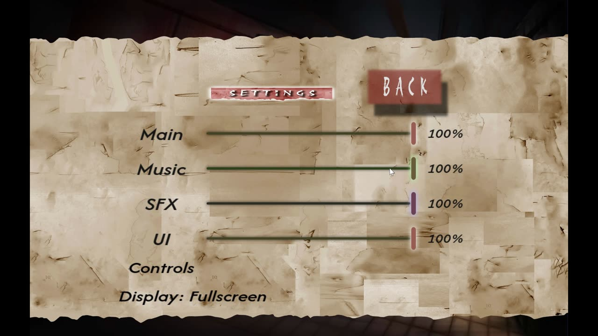
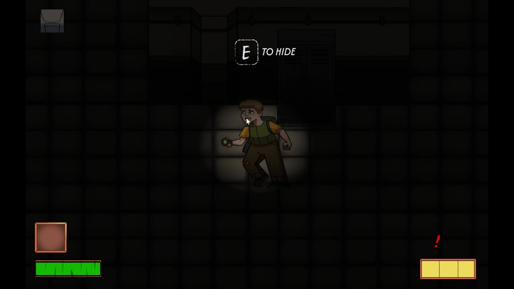
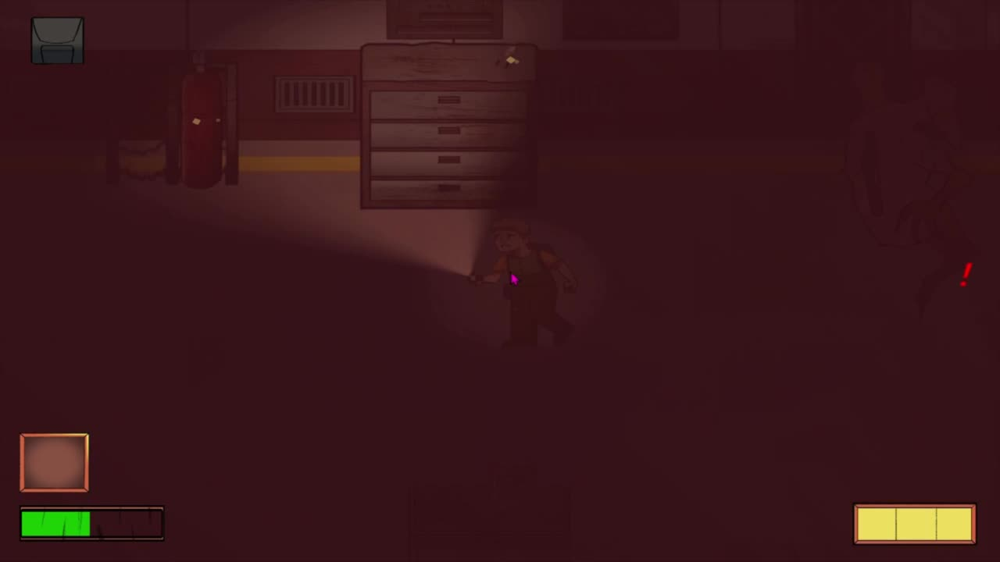
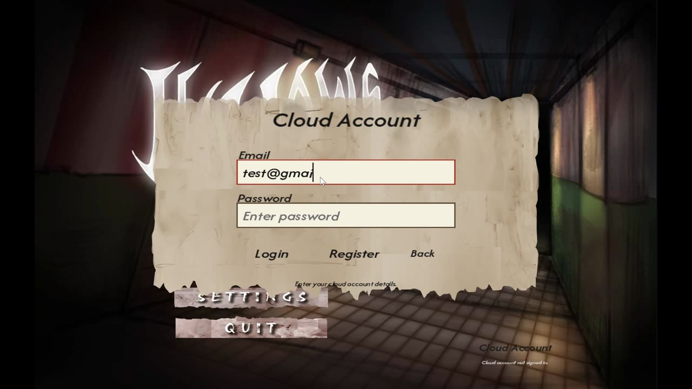

Hollows
Engine systems for a 2D horror game where the monsters hunt by sound.
The game
You are an investigator trapped in a closed prison where sound experiments turned the inmates into creatures that hunt by sound. Sprinting, stepping on broken tiles and using your flashlight all make noise. One sound at the wrong time and the Listeners find you.
That design made audio a gameplay system, not polish. If a footstep clicked when it shouldn't, or a monster growl came from the wrong side, the game stopped working.
What I built
Audio engine and mixer
FMOD integration, mixer buses for music, effects, ambience and UI, crossfades between scenes, 3D-positioned monster sounds, high-pass and reverb in the chase, all driven by JSON.
Physics and collision
Axis-aligned box and circle collision with resolution, plus a uniform-grid broad phase so objects only test against their neighbours.
Save and cloud save
Two local save slots, then account sign-up, login and cloud sync of those slots through Supabase’s REST API over HTTPS.
Gamepad support
Rebindable controls with unit tests, controller navigation for every menu, button prompts that switch with the device, and disconnect handling.
Editor tools
ImGui panels for the audio mixer, cutscenes, gamepad bindings and build size, so designers could tune without touching code.
Cutscenes and release
MPEG video playback for cutscenes and the menu background, fog effects, a splash screen, and a build with zero compiler warnings.


The popping problem
- Problem
- Sounds clicked. Stopping a footstep loop, cutting to the jumpscare, dragging a volume slider and muffling sound when a monster came near all produced an audible pop.
- Constraint
- In a game about listening, every stray click reads as a noise you made. The fix had to hold at any frame rate and through scene changes.
- What failed
- Fading volume a little each frame still left steps you could hear, and removing and re-adding the low-pass filter on a live channel popped every time.
- What I changed
-
- Stops became sample-accurate 140 ms fades scheduled on FMOD’s audio clock, with the channel set to stop itself when the fade ends.
- Volume ramping turned on for every channel, so slider jumps are smoothed by the mixer itself.
- The muffle filter is created once and its cutoff updated in place, using FMOD’s stable simple low-pass instead of the deprecated one.
- Game events pause while the inventory is open, so sounds can’t fire half-started.
- Result
- The clicks went away at the jumpscare, when walking stops and on the menus, and scene changes fade out cleanly.

Collision with a uniform grid
Checking every object against every other grows with the square of the object count. The broad phase drops each object into 128-pixel grid cells by its bounding box, then only tests objects that share a cell. The exact box and circle tests run on that short list.
Cloud saves without a game server
Players can sign up and keep their two save slots online. I used Supabase for accounts and storage and talked to it directly from C++ with Windows’ WinHTTP, so the team didn’t have to run a server.
Each upload is keyed on the player and slot number, so saving again replaces that slot instead of creating duplicates.

How it came together
- Added FMOD and the first audio system to the engine.
- Box and circle collision in the physics system.
- Audio saved and loaded from JSON, with error handling and drag-and-drop in the editor.
- Audio mixer and cutscene editors in ImGui; fades on all channels; save and load menu; fixed a memory leak in video playback.
- Uniform-grid broad phase for collision.
- Fully data-driven audio, cloud save with accounts, fog effects, and the popping fixes.
- Gamepad support with unit tests, warning-free build, documentation, release.
The rest of the team
The engine was a team effort. My teammates owned these parts:
Hollows is a DigiPen Institute of Technology Singapore school project, so the source code isn’t public. I’m happy to walk through any of the systems above in an interview.
Text mode font: IBM VGA 8x16 from The Ultimate Oldschool PC Font Pack by VileR, licensed CC BY-SA 4.0.